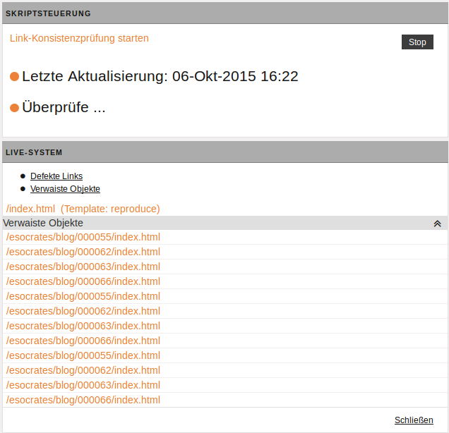

Link-Konsistenz prüfen
Im Gegensatz zum Link-Checker auf dem Schreibtisch, mit dem Sie immer nur die Verweise innerhalb eines einzelnen Dokuments prüfen können (siehe Link-Checker), ermöglicht die Link-Konsistenzprüfung die Untersuchung aller existierenden HTML-Dateien auf mehreren Systemen.
Hinweis
Dieser Vorgang kann bei größeren Projekten einige Zeit beanspruchen und erhebliche Last auf dem Server erzeugen. Daher können nur Benutzer mit Zugriff auf die Superuser-Gruppe die Link-Konsistenzprüfung starten.
Allen anderen Benutzern steht ein Report der letzten Prüfung zur Verfügung.
Link-Konsistenz-Report auswerten#
Wählen Sie Dokumente -> Link-Konsistenzprüfung.
Beachten Sie, dass das hier angezeigte Dialogfenster in der Superuser-Ansicht dargestellt ist. Da Sie als "einfacher" Benutzer den Report nicht starten oder stoppen dürfen, werden diese Optionen in Ihrer Ansicht auch nicht eingeblendet.

-
Im Bereich Letzte Aktualisierung finden Sie die Angabe, wann die Link-Konsistenzprüfung zuletzt durchgeführt wurde.
-
Für jeden konfigurierten Server wird ein Report der Link-Konsistenzprüfung in einer eigenen (grauen) Box angezeigt. In einer Leiste wird der Name des jeweiligen Servers aufgeführt (in der Beispielabbildung "LIVE-SYSTEM").Darunter befinden sich Verweise, mit denen Sie die einzelnen Sektionen eines Reports direkt aufrufen können. Folgende Sektionen sind verfügbar:
- Defekte Links: In dieser Sektion finden Sie Verweise, die nicht aufgelöst werden konnten, weil die Ziel-URL nicht erreichbar war. Die folgende Abbildung zeigt ein Beispiel für einen Eintrag in dieser Sektion:

- Verwaiste Objekte: Diese Sektion enthält alle Dateien, auf die von keiner anderen Datei verwiesen wird. Auch hier sind die einzelnen Einträge verlinkt.
-
Dummies: In dieser Sektion finden Sie alle Dokumente mit Links, die eine Raute ('
#') als Ziel haben. Verweise, die zusätzlich über einen Event-Handler eine JavaScript-Funktion aufrufen, sind hier nicht aufgeführt.Hinweis
Links, die im
href-Attribut einen Javascript-Aufruf enthalten (z.B.javascript:myfunc()), ignoriert die Link-Konsistenzprüfung.
- Defekte Links: In dieser Sektion finden Sie Verweise, die nicht aufgelöst werden konnten, weil die Ziel-URL nicht erreichbar war. Die folgende Abbildung zeigt ein Beispiel für einen Eintrag in dieser Sektion:
Link-Konsistenzprüfung starten#
Hinweis
Sie haben die Möglichkeit die Link-Konsistenzprüfung erneut auszuführen. Beachten Sie auch, dass die Prüfung einige Zeit in Anspruch nimmt und zu einer hohen Serverlast führen kann.
- Öffnen Sie Menü -> Dokumente -> Link-Konsistenzprüfung. Wenn Sie für die Superuser-Gruppe zugriffsberechtigt sind, sehen Sie das Dialogfenster Skriptsteuerung.
- Starten Sie mit einem Klick auf Überprüfen die Link-Konsistenzprüfung.
- Sollte diese bereits laufen, sehen Sie an dieser Stelle statt des Links den Vermerk Überprüfe.... in diesem Fall können Sie dann die bereits laufende Prüfung über den Button Stop beenden.
- Klicken Sie auf Schließen, um zum Dashboard zurückzugelangen.